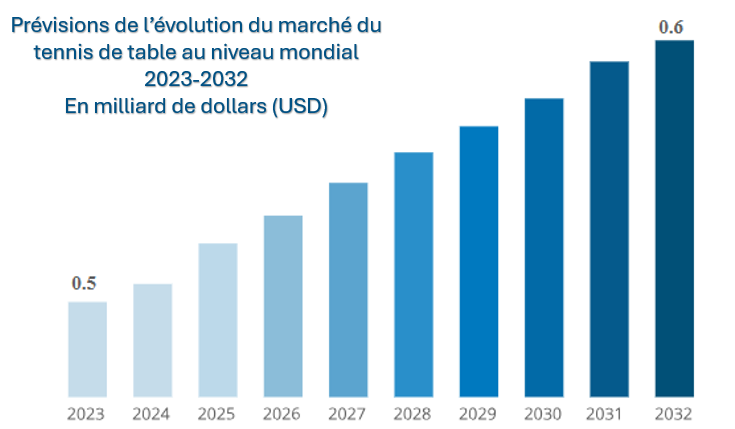

Parmi les acteurs économiques, on retrouve :
Ils assurent la production de biens comme des raquettes, des balles et des tables ainsi qu’une variété d’accessoires.
Leur rôle est de fixer les règlements, organiser des compétitions et promouvoir le tennis de table :
Ils sont aussi d’importants clients en matériel de tennis de table.
Les balles représentent une grande part du marché du tennis de table avec 280 millions de dollars (USD)
Le marché du tennis de table comporte d'autres produits comme les accessoires et les vêtements de sport. Les principaux accessoires sont les housses de protection pour raquettes et tables, les séparateurs de tables, ainsi que les poteaux et filets. Les marques proposent également une gamme de chaussures et de vêtements répondant aux spécificités de la discipline.
Le marché du tennis de table est segmenté en plusieurs catégories. Cette segmentation se retrouve dans l’offre de produits, mais également dans la cible de ces produits.
Le marché se segmente également sur l’usage du produit. Certains produits sont destinés aux particuliers et à un usage amateur, tandis que d’autres produits ont une conception qui répond mieux aux usages intensifs des clubs et des professionnels.
Les particuliers sont à la recherche d’équipement qui leur permettra de se divertir. Le matériel sera simple à
ranger.
Quant aux professionnels et aux clubs, les besoins sont orientés vers la robustesse et la performance.
En effet, le matériel est utilisé très régulièrement, il doit donc résister à un usage récurrent.
Par ailleurs, le matériel doit aussi proposer des caractéristiques qui permettent aux joueurs d’obtenir des
performances optimales.
Le marché du tennis de table est un marché en pleine croissance. Cette tendance semble continuer. Le taux de croissance annuel composé (TCAC) entre 2023 et 2032 est annoncé à 2,1 %. En d’autres termes, le marché mondial du tennis de table s’élevait à 500 millions de dollars (USD) en 2023. Selon une estimation de Business Research Insights, ce marché devrait peser 600 millions de dollars (USD) en 2032.
Cette croissance s'explique dans un premier temps par le rattrapage de la récession économique due à la crise sanitaire. Malgré les difficultés économiques (inflation par exemple), la demande en activités récréatives est toujours très importante. L'engouement pour le tennis de table s'explique aussi par de grands événements sportifs comme les Jeux Olympiques de Paris 2024.
La France compte plus de 225 000 licenciés à la FFTT ainsi qu’environ 6 millions de pratiquants à travers le pays. La Fédération Française de Tennis de Table se tient à la 11ᵉ place parmi les fédérations olympiques agréées en termes d’effectif.
Le tennis de table est donc un sport populaire en France. Sa cote de popularité s'est accrue avec les Jeux Olympiques de Paris en 2024.
Les JO de Paris 2024 ont en effet fait de l’année 2024 une année record pour le tennis de table d’un point de vue socio-économique. Cette année a vu une explosion du nombre d’adhésions à des clubs, mais également une croissance exponentielle des ventes pour le matériel associé à la pratique de la discipline.
D’un point de vue économique, les JO de Paris 2024 ont fait exploser le nombre de ventes d’articles de tennis de table. Des magasins comme Intersport ont vu une augmentation de 50 % des ventes dans cette section, tandis que d’autres enseignes équivalentes ont observé des augmentations allant jusqu’à 70 %. Globalement, les grandes enseignes de sport comme Intersport et Décathlon ont connu une hausse de fréquentation de 10 % durant l’été. D’autres enseignes ont enregistré une croissance record dans la vente d’articles de tennis de table. C’est notamment le cas de Carrefour. L’enseigne partenaire des frères Lebrun, médaillés olympiques de Paris 2024, a vu ses ventes de raquettes augmenter de 548 %. Quant à la vente de balles de ping-pong, leurs ventes ont augmenté de 847 %.
Les fabricants ressentent aussi cette hausse des ventes dans les magasins. Leur production a augmenté tout comme leurs ventes. À la clé, de nombreux bénéfices pour l’emploi. La firme Cornilleau a prolongé ses intérimaires et elle projette d’embaucher sur ses deux sites dans l’Oise.
Les clubs ont aussi ressenti l’engouement pour le tennis de table. La fédération a connu une augmentation importante du nombre de licenciés, passant d'environ 159 000 licenciés sur la saison 2022-2023 à 228 000 sur la saison 2023-2024. Les clubs ont dû s’adapter, mais certains se sont vus dans l’obligation de refuser de nouveaux arrivants.